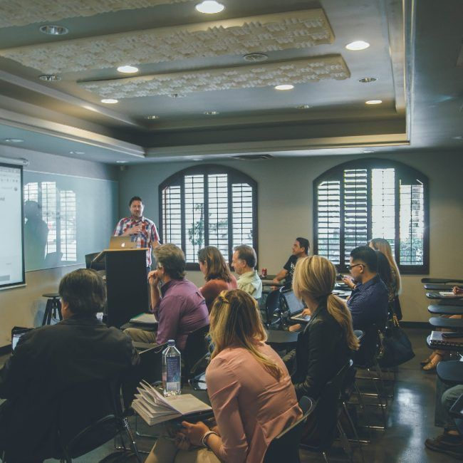
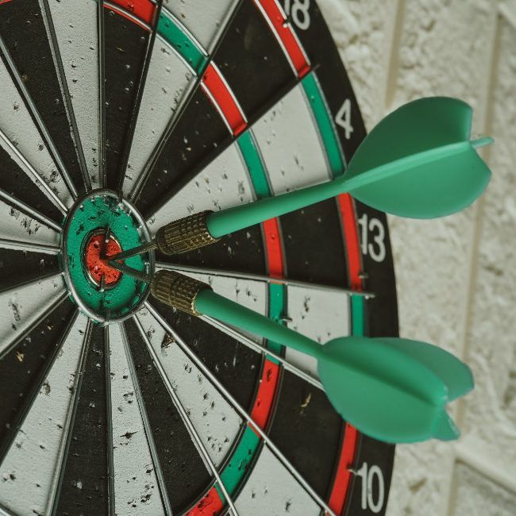
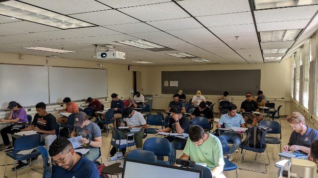
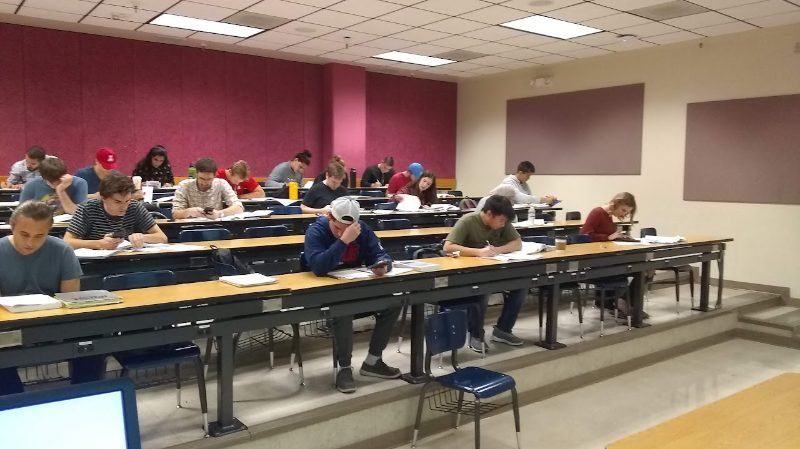
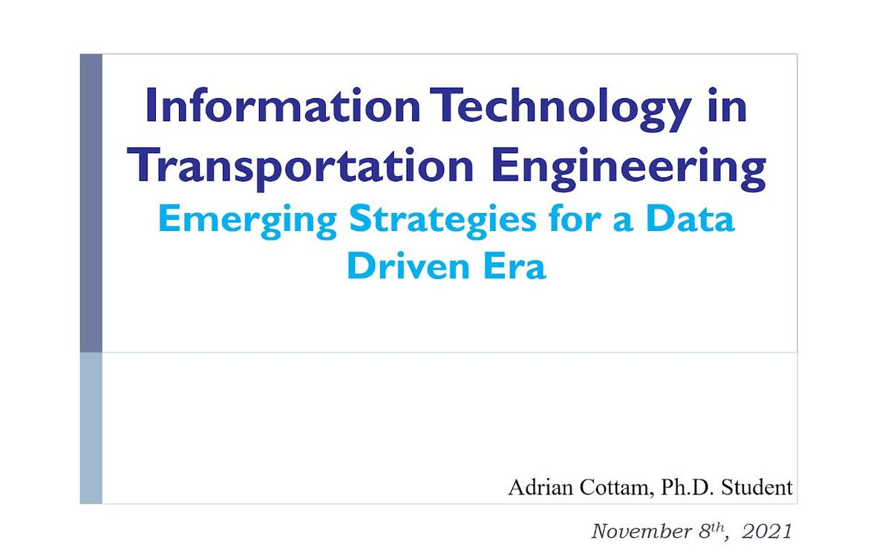
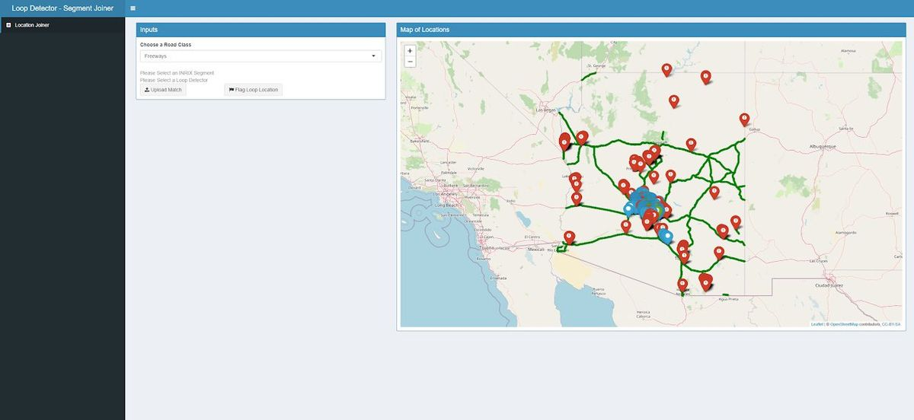
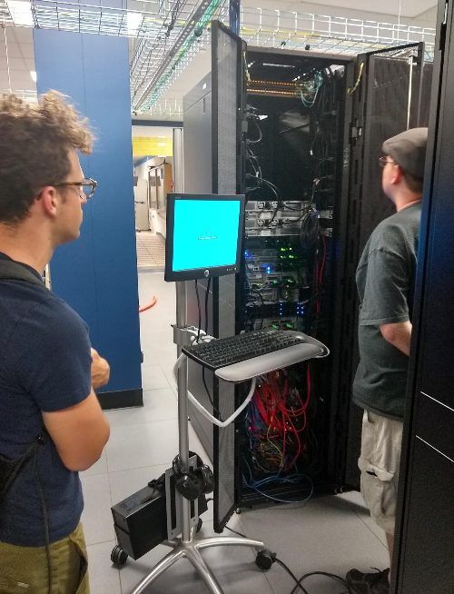

Engineering is an incredibly rewarding field to teach. I would not have found my own love of data science within engineering without a good professor, and I want to pass that on. My teaching philosophy is best summarized in three attributes.
Teaching philosophy

Learner-Centered Learning
Design courses around learner needs and desired outcomes to promote learning and engagement.
Accessible Instruction
Make the classroom a safe place for all students regardless of background or previous experiences.

Demonstrable Achievement
Develop simple and easy to interpret assessments that clearly demonstrate each learner's achievements to all.
Learner-centered learning
I design a course backward from what I want learners to carry into their careers, which means teaching with current tools and current data. I found students were most engaged through dialogue and instant feedback rather than traditional lectures, so I use think-pair-share activities and put real, imperfect agency data in front of students early. Deciding what to do about a gap in a dataset teaches the assumptions behind a method in a way a clean problem set cannot.
Accessible instruction
No student performs their best when they feel isolated or lost. I assign project groups by randomization so transfer and first-year graduate students are not left to find a team on their own, I state material in plain terms while referencing the jargon used in practice, and I provide an anonymous feedback portal in every course so students can improve the class while they are still in it.
Demonstrable achievement
I build assessments around problems students would actually encounter in practice, with explicit expectations, and use frequent low-stakes check-ins so comprehension gaps surface early rather than on test day. At the end of a semester I summarize for the class everything they have accomplished.
Read my formal teaching philosophy (PDF)
Classroom
I teach the way I work: with real agency data and real tools, so students leave with real-world experience.
Instructor
- Spring 2027: CIVL 5500/6500 Traffic Engineering Analysis (3 credits)
- Spring 2025: CIVL 5500/6500 Traffic Engineering Analysis (3 credits)
- Fall 2022: CE 363 Transport Engineering and Pavement Design (4 credits)
- Spring 2022: CE 465/565 Transportation Data Management and Analysis (3 credits)


Teaching Assistant
- Fall 2018: CE 363 Transport Engineering and Pavement Design (4 credits)
- Fall 2017: CE 363 Transport Engineering and Pavement Design (4 credits)
Guest Lecturer
- Guest lectured in CE 363 Transport Engineering and Pavement Design (Fall 2021)
- Discussed the role of information technology and data in transportation engineering
- Applied learner-centered teaching methods such as interactive polling and think-pair-share groups to increase engagement

Course highlights
A consulting study of real Auburn intersections
In CIVL 5500/6500, student teams act as consultants hired to analyze an intersection on the Donahue Drive and Samford Avenue corridors. They collect their own turning-movement counts, compute capacity, delay, and level of service, check signal warrants, recommend multimodal improvements, and present to a panel of expert judges.
Live web dashboards with R, Shiny, and SQL Server
I designed and taught a new module for CE 465/565 in which teams wrote SQL Server views and built live web dashboards, with tables, plots, and maps, on a crash database. The module used the ADOT SMART tool I built as its real-world example.
Simulation in the core course
In CE 363, I added computer labs on VISSIM traffic microsimulation and four team design projects, including a pitch to a guest judge from UA Parking & Transportation.
Research mentorship
I have mentored fourteen undergraduate, master's, and doctoral students and served on two thesis committees. Current and recent mentees work on driving simulation, imitation learning for autonomous driving, large language model interfaces for traffic data, stochastic threat-vehicle modeling, and low-cost highway-rail grade crossing safety monitoring. A paper led by an undergraduate I mentored earned a 2025 TRB committee best paper award.
- Taught coding principles and system development
- Taught database management for web development
- Worked on projects together to share academic direction
- Delegated tasks and facilitated synthesis of learning


Mentee workshops
- PC building workshop
- Two ShinyProxy workshops
PC building workshop.